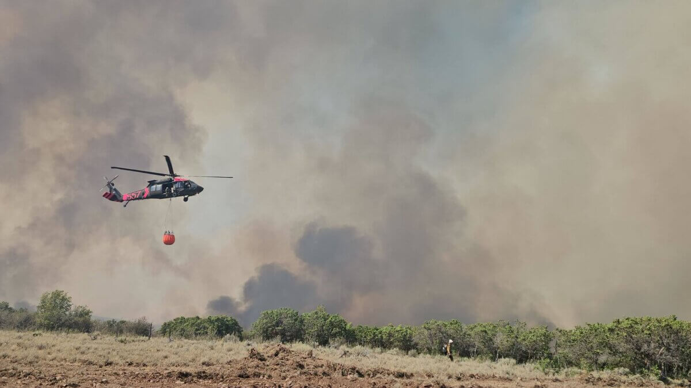
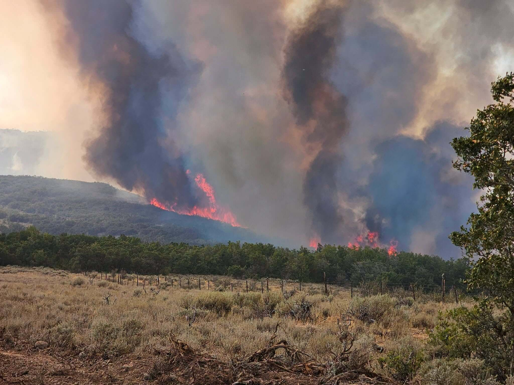
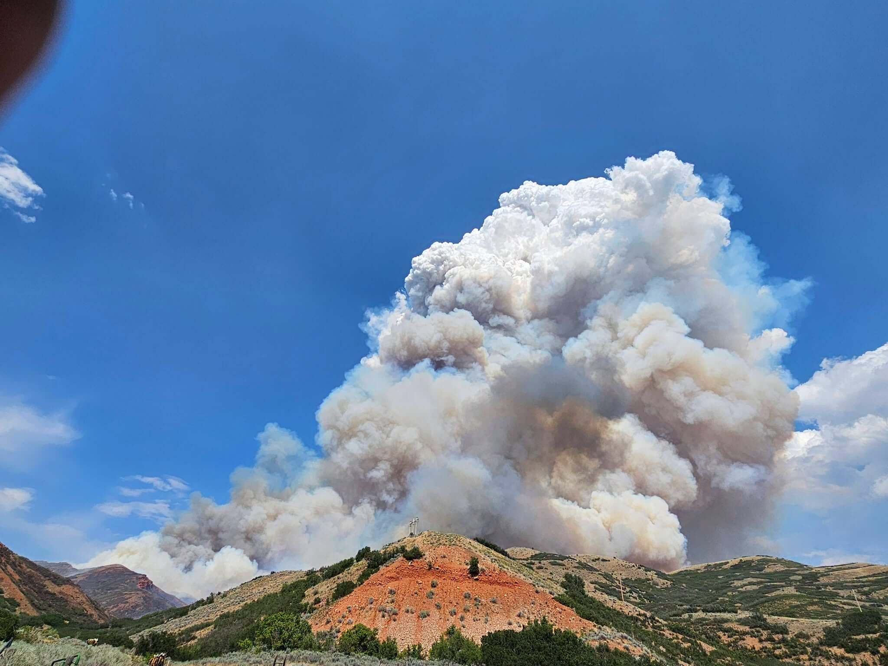

From recent news coverage. Status around Aug 11, 2026: about 13,601 acres, 23% contained (TownLift / Utah Fire Info).
1. Utah National Guard Black Hawk drops water on the Rocky Canyon Fire (Utah Fire Info / Samuel P Barlow Jr) — TownLift Aug 11, 2026

2. Flames on a hillside — Rocky Canyon Fire overnight activity (Utah Fire Info / Samuel P Barlow Jr)

3. Smoke column over the East Canyon area (Utah Fire Info / Samuel P Barlow Jr)

Source article: TownLift